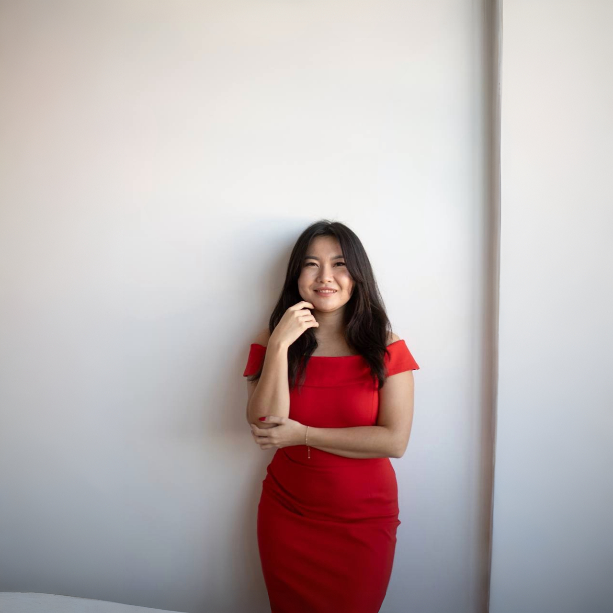

Об авторе · Жансая Кайырбекова
Иногда, чтобы увидеть жизнь по-другому, нужно выйти из привычной среды.
Предприниматель, сертифицированный коуч, Quantum-тренер, практик транзактного анализа и основатель Retreats Traveler.

Большая часть моей взрослой жизни прошла между разными городами, странами и культурами. Я жила в Казахстане и США — в Нью-Йорке, Чикаго, Лос-Анджелесе, Сан-Франциско и Сиэтле.
Со временем я заметила: новое пространство меняет не только то, что вокруг нас. Оно меняет то, что мы способны увидеть внутри себя.
Когда исчезает привычное
Кто я сейчас?
Чего я действительно хочу?
Что я продолжаю делать по привычке?
Как я хочу чувствовать себя в собственной жизни?
01 — Мой путь
Настоящее знание я получила не из программы, а из жизни.
Много лет я работала в технологической сфере — в QA и инженерии. Эта работа научила меня системности и способности видеть, как отдельные элементы складываются в большую систему.
Но параллельно меня всегда интересовала другая система — человек. Эти вопросы привели меня в психологию, коучинг, транзактный анализ, медитацию и десятидневную Vipassana.
Самое важное знание я получила из переездов, отношений, сложных решений и потерь — из моментов, когда приходилось заново отвечать себе: «А кто я теперь?» Настоящее развитие для меня — способность всё честнее видеть себя и выбирать осознанно.
02 — Почему путешествия
Возможность посмотреть на свою жизнь с расстояния.
Каждый новый город показывал мне новую версию меня — не потому, что место магически меняло жизнь, а потому, что новая среда убирала автоматизмы. Ты больше не идёшь привычной дорогой — и мозг снова вынужден обращать внимание.
Для меня путешествие — не побег из жизни, а возможность вернуться в неё немного более осознанным человеком.
Я не верю, что нужно становиться «лучшей версией себя». Мне ближе другое: становиться всё более собой.
03 — Почему Retreats Traveler
Не отдельные ретриты, а экосистема.
Очень часто человек получает невероятный опыт, возвращается вдохновлённым — а через несколько недель снова оказывается внутри прежнего ритма.
Так родилась идея Retreats Traveler — пространства, где можно находить тщательно отобранные ретриты, сильных специалистов и международное сообщество. Мы не хотим просто продавать поездки — мы создаём условия для встреч, после которых что-то действительно остаётся с человеком.
04 — Что важно в каждом ретрите
Мне неинтересно, чтобы человек просто сказал «это было красиво».
«Что изменилось в том, как ты живёшь?»
- Профессиональные психологические практики
- Работа с телом и эмоциональной осознанностью
- Природа и путешествия
- Глубокие человеческие разговоры
- Пространство без спешки
- Сильные специалисты
- Международное сообщество
- Действия, которые можно забрать с собой
05 — Моё видение
Ретрит — это не конечный продукт. Это начало.
Я хочу, чтобы Retreats Traveler со временем стал международной платформой и сообществом, объединяющим людей, специалистов и трансформационные путешествия по всему миру. Местом, куда человек приходит, когда чувствует: мне нужно пространство, чтобы снова услышать себя.
Начало новых отношений с собой. С людьми. Со своим телом. Со своими решениями. И со своей жизнью.
Путешествуй в новое место. И встреть там себя по-новому.